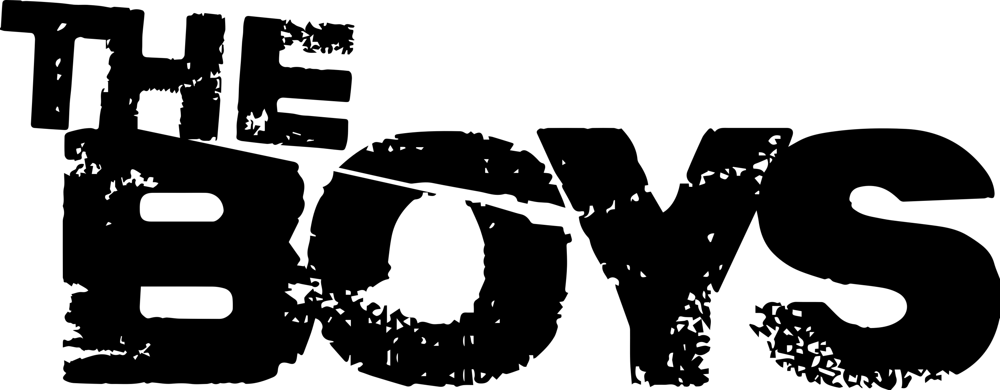
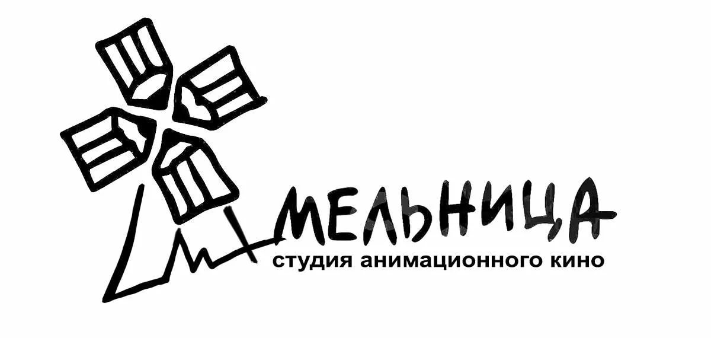
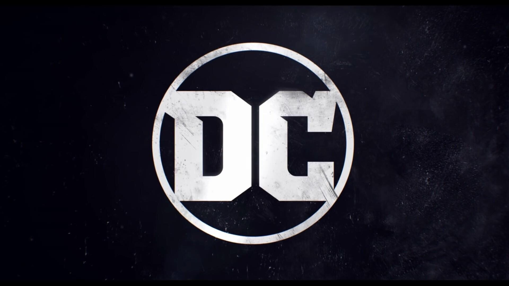

Киновселенные
Вселенная Marvel - это вымышленная вселенная, в которой происходят истории большинства американских комиксов и других средств массовой информации, опубликованных Marvel Comics.
В этой вселенной живут такие супергерои, как "Мстители", "Люди Икс", "Фантастическая четверка" и многие другие супергерои Marvel. включая таких персонажей, как Человек-паук, Железный Человек, Тор, Халк, Капитан Америка, Росомаха, Черная Пантера, Доктор Стрэндж, Черная вдова, Человеческий Факел, Сорвиголова и Дэдпул.
The Boys — американский супергеройский веб-сериал, созданный Эриком Крипке для стриминговой платформы Amazon Prime Video. Основан на одноимённом комиксе Гарта Энниса и Дарика Робертсона, который в разное время издавали DC Comics и Dynamite Entertainment.
Сериал рассказывает о команде мстителей, которые борются с супергероями, злоупотребляющими своими сверхспособностями. Карл Урбан, Джек Куэйд, Лаз Алонсо, Томер Капон и Карен Фукухара исполняют роли тех самых «Пацанов», в свою очередь Энтони Старр, Эрин Мориарти, Доминик Макеллиготт, Чейс Кроуфорд, Джесси Т. Ашер и Натан Митчелл играют роли членов «Семёрки», элитной группы супергероев корпорации «Vought International», за благородным обликом которых скрываются злодеи, маньяки, психопаты, склонные тайком совершать ужасные поступки, не неся никакой ответственности.
Студия анимационного кино «Мельница» — российская анимационная студия, выпускающая мультфильмы и мультсериалы. Создана 26 марта 1999 года, учредителями выступили Александр Боярский и кинокомпания СТВ.
Вселенная, созданная студией "Мельница", представляет собой удивительный мир, населенный героями русской народной сказки. В этой мультфильмной вселенной сосредотачивается внимание на трёх богатырях — Добрыне Никитиче, Илье Муромце и Алёше Поповиче, которые сражаются с различными сказочными существами и врагами, защищая свою землю. Этот мир также обитают злодеи, такие как Змей Горыныч и Шамаханская царица, которые представляют угрозу для героев и создают захватывающие сюжеты и приключения. Вселенная "Мельницы" славится своими красочными и качественными анимационными изображениями, а также юмором и элементами фольклора, которые делают её привлекательной для зрителей всех возрастов.
Вселенная DC — американская медиафраншиза, вымышленная общая вселенная, серия фильмов о супергероях, основанная на комиксах компании DC Comics, разрабатываемая студией DC Films и выпускаемая компанией Warner Bros.
Во франшизу также входят телесериалы, короткометражные фильмы, книжная продукция и видеоигры. Как и оригинальная вселенная DC, эта вселенная была создана путём соединения в общую сюжетную линию нескольких фильмов и сериалов с общими актёрами, персонажами и событиями. Компания Warner Bros. планировала объединить различных супергероев DC Comics ещё с 2002 года, когда Вольфганг Петерсен был назначен режиссёром кроссовера франшиз о Бэтмене и Супермене. Но запланированный фильм о Лиге справедливости был отложен, а успех «Тёмного рыцаря» в 2008 году позволил студии сосредоточиться на обособленных сериях фильмов. Однако ради конкуренции с Кинематографической вселенной Marvel Warner Bros. в 2011 году приняла решение о создании общей вселенной.